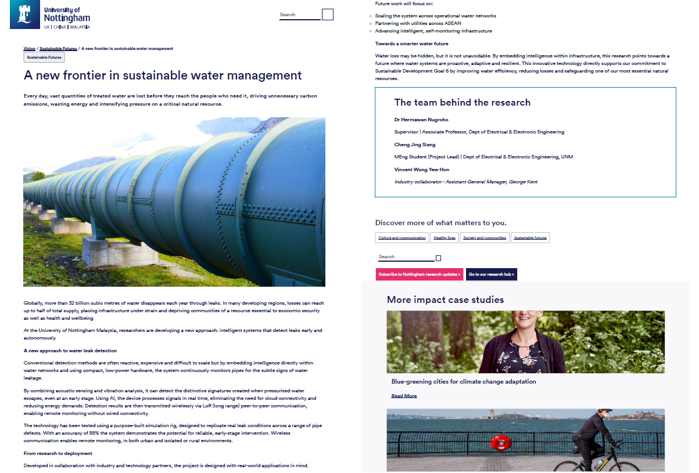
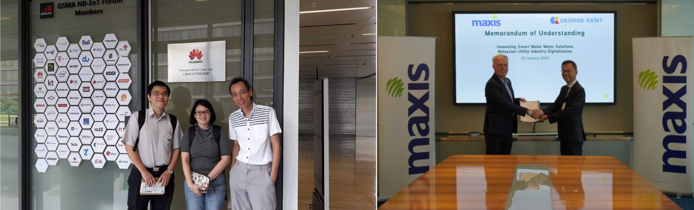
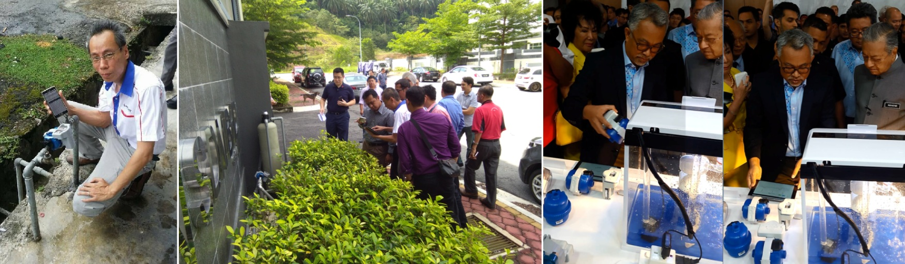
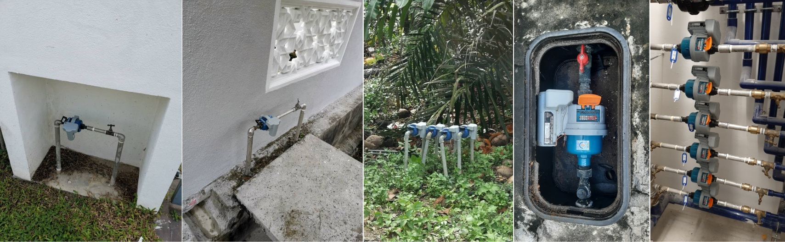

This page highlights selected academic, industry, and professional recognition related to Smart Metering, Advanced Metering Infrastructure (AMI), Smart Water, Utility IoT, and digital transformation.

Featured by the University of Nottingham in the article "A New Frontier in Sustainable Water Management", highlighting professional contributions and perspectives on smart water technologies, utility innovation, and sustainable water management.

Speaker at AsiaWater 2026 Technology Seminar: Smart Metering for Asia: Enabling Digital Water Management.
Named Inventor: WONG YEW HON (Vincent Wong) — Water Metering Devices and Assembly. Named Inventor of Malaysian Patent MY-211193-A, introducing structural and functional innovations in utility assemblies to optimize mechanical security, enable ultra-low power sensing architectures, and deliver precise bi-directional flow measurement capabilities. View Full Technical Schematic & Layout →

Technical research at the Huawei Shanghai NB-IoT OpenLab during early cellular LPWAN ecosystem development (left); official Memorandum of Understanding (MoU) signing ceremony between Maxis and George Kent featuring Chief Enterprise Business Officer Paul McManus and the George Kent Executive Director (right).

Demonstrating live NB-IoT telemetry upon activation of Malaysia's 1st base station (left); leading official POC site audits for utility and telco executives (center); and representing George Kent during a national-level technology showcase alongside a partner Telco CEO and the Prime Minister (right).

Diverse water smart meter field deployments across residential meter stand, underground valve boxes, rural ground fields, and highrise indoor manifold clusters.
Pioneering early NB-IoT smart water metering rollouts in Malaysia and the ASEAN region, driving utility digitalization and large-scale AMI implementation initiatives.